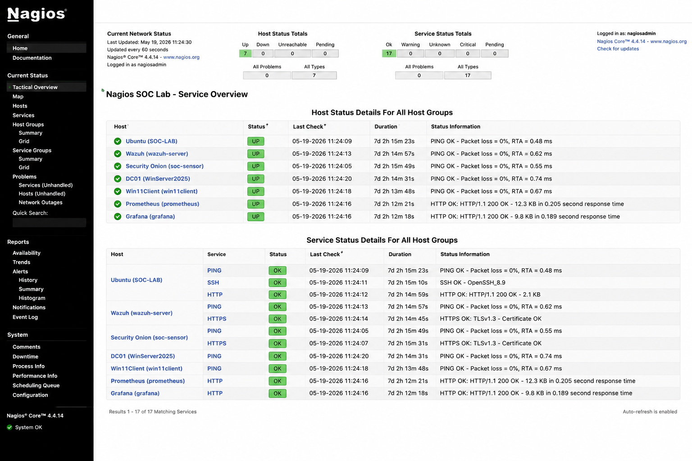

Elite version
From attack simulation to clear defensive evidence.
A polished SOC portfolio that connects Windows Server 2025 Active Directory, Windows 11, Kali, Ubuntu, Wazuh, Security Onion, Nagios, Prometheus, and Grafana into one interview-ready blue-team story.
soc-demo.sh
$
Hydra SSH brute force
Show attacker action, Ubuntu authentication failures, Wazuh alerts, Security Onion traffic, and Prometheus context as one clean evidence chain.
Nmap active scanning
Use reconnaissance as an early-warning narrative before exploitation begins, mapped to MITRE and validated with network evidence.
Prometheus + Nagios
Prove the lab is not only about alerts, but also uptime, trends, target health, and operational maturity.
About the lab
Enterprise SOC lab built for real analyst storytelling
The lab simulates a realistic defensive environment where attacks are executed, detected, correlated, documented, and presented as recruiter-friendly evidence.
Identity layer
Windows Server 2025 domain controller, DNS, DHCP, and Windows 11 client integration.
Endpoint layer
Wazuh and Sysmon-style telemetry for endpoint visibility, alerting, and custom detection logic.
Network layer
Security Onion, Zeek, Suricata, Hunt, and PCAP-style evidence for network-centric detection.
Operations layer
Nagios, Prometheus, and Grafana for uptime, target health, trend analysis, and dashboards.
Architecture
Full-stack lab architecture
Merged from the SOC lab structure in site1 and presented with the polished visual system from site2.

Full Stack Architecture
SIEM, NDR, metrics, dashboards, Active Directory, attacker host, and monitored endpoints.
View overview docs
Network Design
Host-only SOC subnet for lab traffic with NAT path for updates, packages, and controlled access.
View network zones
Grafana Layer
Prometheus metrics visualized through Grafana to support operational and detection narratives.
View Grafana docsAttack simulations
Attack stories with GIF previews and evidence links
Attack
SSH Brute Force
Hydra against Ubuntu SSH with Wazuh, Security Onion, Nagios, and Prometheus correlation.

Attack
Network Recon
Nmap against Ubuntu, DC01, and Win11Client, mapped to discovery and active scanning techniques.

Attack
Web Enumeration
Gobuster-style directory discovery with Apache log evidence and network visibility.

Detection engineering
Endpoint, network, and correlation evidence
 Wazuh
Wazuh
Custom Wazuh Rules
Custom XML detections mapped to MITRE for brute force, recon, and suspicious activity.
View Wazuh docs Correlation
Correlation
Multi-tool Correlation
Endpoint logs, network evidence, metrics, and availability checks tied into one investigation.
View correlation docs Threat hunting
Threat hunting
Security Onion Hunt
Zeek, Suricata, Hunt, and PCAP-style workflows used to validate the network side of attacks.
View Sigma docsObservability stack
Nagios, Prometheus, and Grafana
Operational monitoring makes the SOC portfolio stronger by showing service health and performance context, not only security alerts.

AvailabilityNagios
Service-state awareness for monitored hosts and critical lab services.
View Nagios docs Metrics
Metrics
Prometheus
Time-series metrics for Windows, Linux, and infrastructure targets.
View Prometheus docs Dashboards
Dashboards
Grafana
Dashboards for resource trends, attack windows, and operational presentation.
View Grafana docsMetrics section
Embedded Prometheus-style charts
These lightweight SVG charts can later be replaced with real Grafana or Prometheus exports.
CPU usage during brute-force window

Alert timeline

Network traffic pattern

MITRE ATT&CK
Technique mapping recruiters recognize quickly
This turns raw tool output into standard analyst language and makes the project easier to explain in interviews.
Brute Force
Hydra against SSH on Ubuntu. Logged in authentication sources, surfaced in Wazuh, and validated with network evidence.
Active Scanning
Nmap reconnaissance across the lab to enumerate hosts and services before exploitation.
Wordlist Scanning
Gobuster-based web enumeration tied to Apache logs, traffic evidence, and service monitoring context.
Case-study reporting
Incident reports written like real deliverables
Each report connects attacker activity, evidence sources, analyst assessment, and lessons learned.
Incident 01 · SSH brute force
Controlled Hydra attack against Ubuntu SSH with host, network, uptime, and metrics correlation.
Open reportIncident 02 · Nmap reconnaissance
Pre-attack active scanning documented as suspicious discovery activity and early warning signal.
Open reportIncident 03 · Web enumeration
Gobuster-based directory scanning tied to web logs, network observations, and performance context.
Open reportSOC analyst interview prep
Questions answered directly from the lab
Use this section as a rehearsal tool before interviews.
Why did you use both Security Onion and Wazuh?
Security Onion gives the network view through Zeek, Suricata, Hunt, and traffic evidence. Wazuh gives endpoint visibility through logs, rules, and host-based alerts. Together they reduce blind spots.
Why did you use both Nagios and Prometheus?
Nagios gives clear service-state awareness, while Prometheus adds time-series metrics and trend analysis. Together they show operational maturity beyond simple up/down checks.
How do you explain the value of correlation?
Correlation increases confidence. If logs, network evidence, service health, and metrics support the same conclusion, the analyst has a stronger investigation story.
What is the strongest story in the portfolio?
The SSH brute-force scenario because it is realistic, easy to understand, and demonstrates attacker activity, alerting, network evidence, and monitoring in one chain.
Custom domain
vincentita.dev
The site is structured for GitHub Pages and can be upgraded from a repository URL to a polished portfolio domain.
Recommended file
site/CNAME vincentita.dev
Deployment steps
- Push the repository to GitHub.
- Enable GitHub Pages.
- Set the custom domain to vincentita.dev.
- Point DNS records to GitHub Pages.
- Enable HTTPS after DNS propagates.
Next step
Ready to show this live in interviews
Replace placeholders with real screenshots, GIFs, and your final CV PDF, then publish the site.